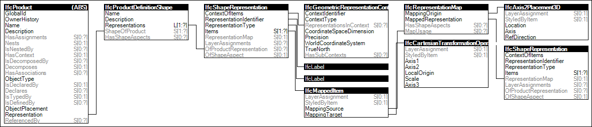

Link to this page
Link to this pageElements may have a 'Mapped Geometry' representation that reuses the concept Product Type Shape at the corresponding product type, as defined by the concept Object Typing.
The representation identifier of the mapped geometry representation is any of the other valid geometric representation identifiers, such as 'Body', 'FootPrint', or 'Axis'.
Figure 54 illustrates an instance diagram.
 |
Figure 54 — Mapped Geometry |